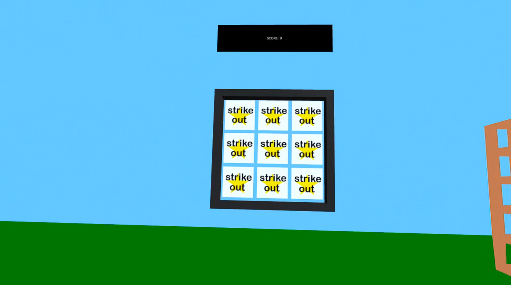
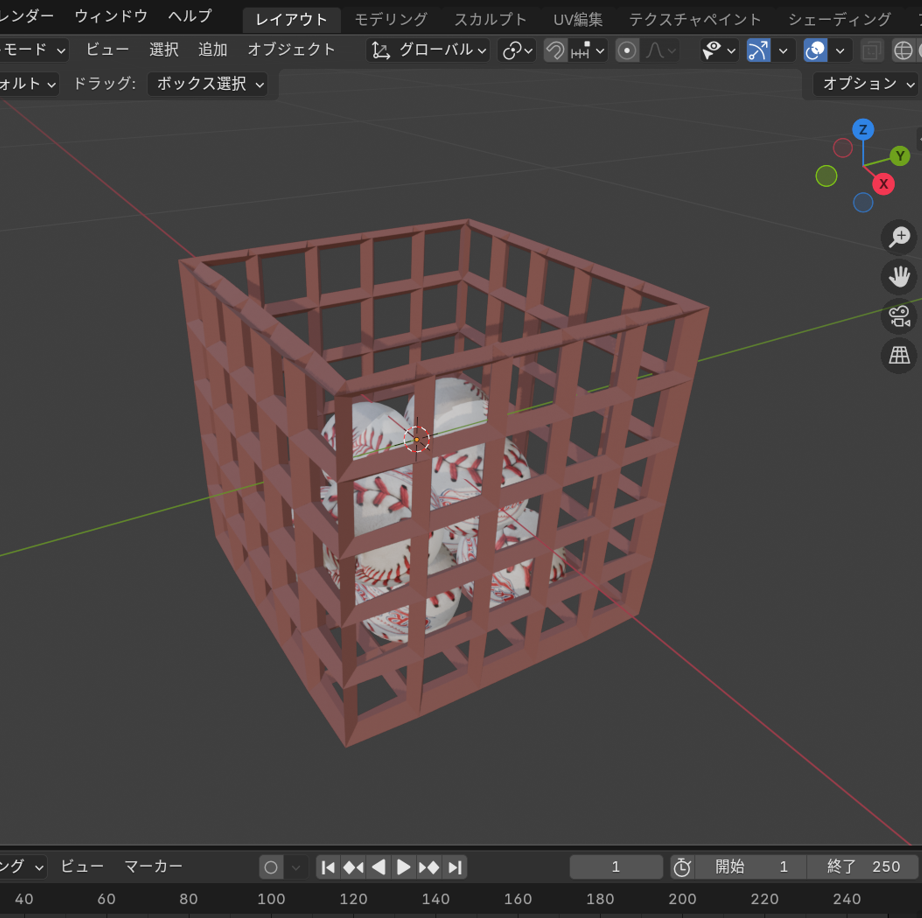

01. 概要と背景
大学のゼミにおいて、物理エンジンBullet Physicsを用いたアプリケーション開発について学び、その集大成としてVR空間内で直感的に物体を操作できるストラックアウトゲームを制作しました。既存のゲームエンジンを使用せず、C++を用いて低レイヤーから物理演算とVR描画を連携させる実装に挑戦しています。
02. OpenXRと物理エンジンの統合および座標同期
開発にあたり、Meta OpenXR SDKとBullet PhysicsをC++上で統合しました。環境構築の際、静的ライブラリのリンクエラーが多発したため、プロジェクト内に物理エンジンのソースコードを直接配置して一元コンパイルする手法をとり、開発環境を安定させました。
また、VR特有の描画サイクルのため生のOpenGL機能が制限される中、SDKが提供する描画ラッパーを活用しています。プログラム内で物理エンジンが計算した座標の変換行列から位置と回転を個別に抽出し、プレイヤーの視点移動分を逆行列で補正して描画モデルに渡すという、物理と描画の座標同期システムを自作して組み込みました。
03. 物理演算によるインタラクションの実装
物理拘束を用いた掴みと投球のアクション
プレイヤーがVRコントローラーでボールを掴む動作は、キネマティック剛体とボールの間に6自由度拘束を動的に生成することで実装しました。トリガーを離した瞬間にこの拘束を解除し、直前のフレームとの手の移動差分からベクトルを算出してボールに初速度を与えることで、自然な投球感覚を再現しています。
的の挙動とすり抜け対策
的となるパネルの挙動には、下辺を軸としたヒンジ拘束を採用し、ボール命中時に後方へ90度だけ倒れ込むメカニクスを構築しました。さらに、剛速球によるオブジェクトのすり抜け現象を防ぐため、ボールの生成処理に連続衝突判定を組み込むなど、ゲームとしての遊びやすさとシミュレーションの正確性を両立するコードを実装しています。

開発画面：Blenderによる3Dアセットの作成とC++での実装